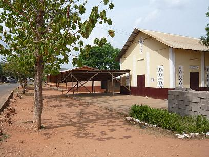
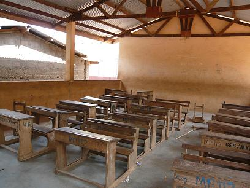
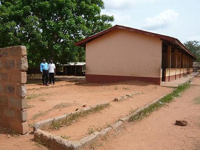
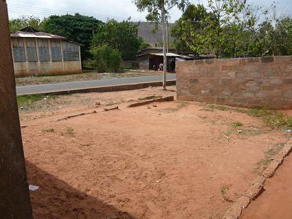

|
Background
Odumase district is about 1½ hours from Accra and is apparently a
particularly poor district of Ghana with little local industry and high
unemployment. Schooling is a major issue, with many children not
attending. Reasons for non-attendance include seasonal labour (planting during
the rains), seasonal problems with transport and classrooms (which are open at
the sides, and therefore open to the elements), pressures to earn money rather
than school (either because children have been abandoned by parents who moved
outside of the district or because parents require children to generate
income), frequent young pregnancies (apparently girls often get pregnant from
12 years of age) and reluctance of parents to pay school exam fees (education
is now free but exams must be paid for).
Primary school runs to Form 6, after which junior secondary school runs
from Form 7 upwards. At Odumase Anglican Primary, each year is divided into
"a" and "b" and each form then has about 45 students. The classroom to be
erected is for Form 3b. The students are currently being taught outside
underneath a shelter situated next to the church:

New Classroom
Behind this shelter you can see classrooms that form one side of a
quadrangle of classrooms. The new classroom is to be situated at the far end
of this block. The peers of Form 3b, in Form 3a, are currently taught in the
following classroom (Samuel the headmaster is in blue, Samuel the contractor
is in white):


The new classroom is being designed to be the same as this one. An attempt
had previously been made to erect the new classroom but was abandoned due to
lack of funds. Therefore, the foundations and one wall already exist.


Contract
The total amount quoted for the work seemed reasonable and we went through
each budget line together. I signed their agreement for the work with the
contractors on behalf of the Teach Ghana Trust on the following
understanding:
- There would be a sign on the room saying "The Berry Room funded by the
Teach Ghana Trust"
- The money would be paid in installments through Fatawu via Western
Union
- Each installment will be sent only after sufficient evidence that the last
was used in accordance with the plan for the building
- Evidence would be in photographic form
- Fatawu would visit and give the go ahead for the next transfer of
funds
- All receipts for building materials, supplies and labour will be kept by
the headmaster.
|


{kind=link}
{kind=link}
{kind=link}
{kind=link}
{kind=link}
{kind=link}
{kind=link}
{kind=link}
{kind=link}
{kind=link}
{kind=link}